This document covers the core AI decision-making components of the Signal trading system, specifically the three-stage AI pipeline that drives all trading decisions. This includes the SignalOutline, CloseOutline, and RiskOutline services with their TTL (Time To Live) systems and decision logic.
For information about the mathematical analysis services that feed data into these AI components, see Mathematical Analysis Services. For details about the agent swarm system used for user consultation, see Agent Swarm System.
The AI Trading Engine employs a sophisticated three-stage pipeline that mimics professional trader thinking. Each stage operates independently with its own specialized AI prompts, TTL intervals, and decision logic.
The SignalOutline service determines whether to open LONG/SHORT positions or wait based on comprehensive market analysis across multiple timeframes.
The SignalOutline produces structured decisions with the following format:
| Field | Type | Description |
|---|---|---|
action |
"trade" | "wait" |
Primary decision |
position |
"long" | "short" | "wait" |
Position direction |
current_price |
number |
Market price at decision |
stop_loss_price |
number |
Risk management level |
take_profit_price |
number |
Profit target |
description |
string |
Professional recommendation |
reasoning |
string |
Detailed technical justification |
The SignalOutline employs a dynamic Time-To-Live system that adapts to market conditions:
The SignalOutline uses sophisticated prompts that emphasize:
Key prompt sections include directional bias detection:
БЫСТРАЯ ЛОНГ ТОРГОВЛЯ (15-минутные покупки) подходит когда:
- Видишь высокую волатильность и четкие импульсные движения ВВЕРХ
- RSI и StochRSI дают ясные сигналы на покупку на коротких периодах
- Объемы взрываются на пробоях уровней сопротивления ВВЕРХ
The CloseOutline service specializes in scalping-oriented early position closure based on P&L dynamics and reversal signal detection.
The CloseOutline implements a sophisticated adaptive TTL system that responds to profit/loss momentum:
| P&L State | TTL Duration | Reasoning |
|---|---|---|
| PROFIT_RISING_TTL | 2.5 minutes | Profit growing, price rising - normal monitoring |
| PROFIT_FALLING_TTL | 1.0 minutes | Profit declining, fast check for reversal |
| LOSS_RISING_TTL | 5.0 minutes | Loss shrinking, slow check for recovery |
| LOSS_FALLING_TTL | 5.0 minutes | Loss growing, slow check to avoid panic |
The CloseOutline employs professional trader intuition with specific criteria:
HOLD Position when:
CLOSE Position when:
The close.json file demonstrates an actual AI decision where the system chose to close a position:
{
"action": "close",
"description": "ЗАКРЫТЬ ПОЗИЦИЮ — P&L показывает слабый импульс и потерю первоначального прогресса",
"reasoning": "Текущий P&L демонстрирует слабый импульс — достиг пика +0.10% но откатился до +0.05%..."
}
The RiskOutline service performs global safety assessment of trading conditions and recommends optimal trading strategies.

The RiskOutline incorporates intuitive analysis capabilities:
ИНТУИТИВНЫЙ АНАЛИЗ РЫНКА:
- Используй интуицию для выявления скрытых рыночных возможностей
- Обращай внимание на аномалии в движении цены, объемах или поведении индикаторов
- Учитывай рыночный контекст: недавние новости, поведение крупных игроков
The AI Trading Engine uses a sophisticated configurable prompt system with override capabilities and fallback mechanisms.
Each prompt service follows a consistent singleshot caching pattern:
export class SignalPromptService {
private getPrompt = singleshot(async (): Promise<PromptModel> => {
const customPath = require.resolve('./config/signal.prompt.cjs');
if (await exists(customPath)) {
return require(customPath); // Custom override
}
return signal_prompt_default; // Default fallback
});
}
This architecture provides:
The AI Trading Engine integrates with multiple AI providers through the InferenceMetaService for model selection and completion processing.
Each AI completion goes through structured processing:
The system ensures robust error handling and graceful degradation when AI services are unavailable.